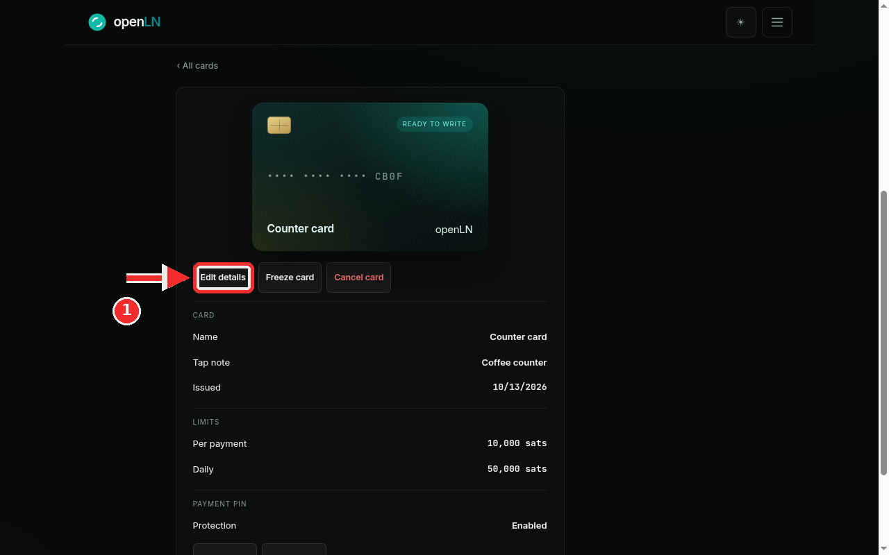
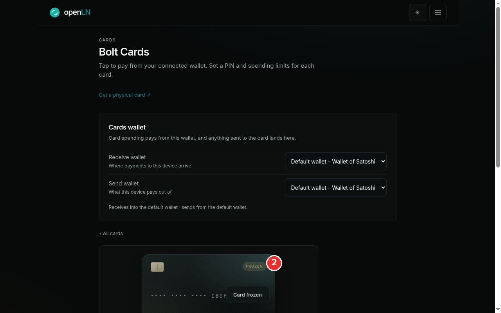
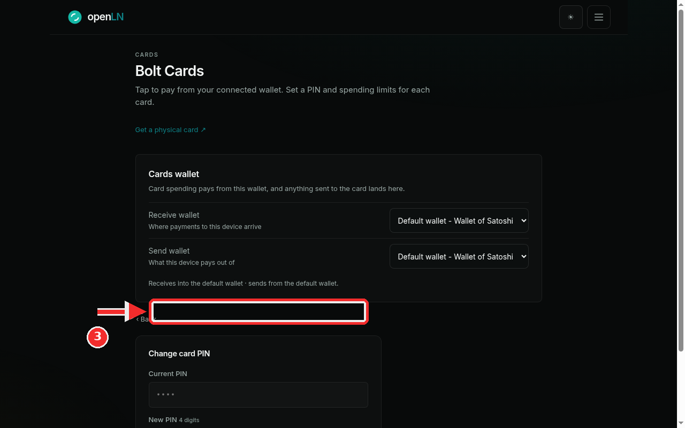
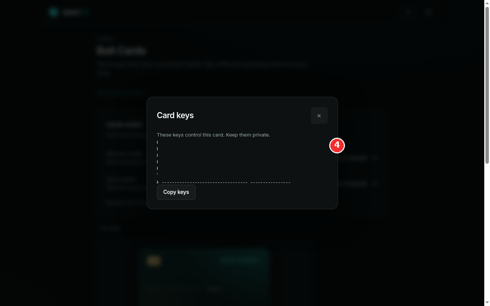
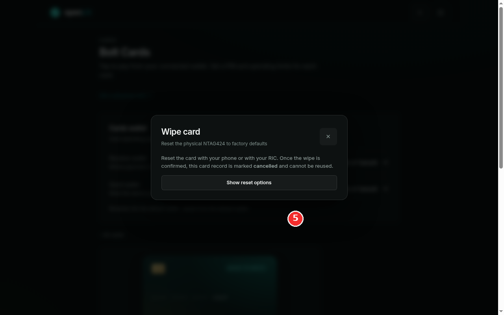

How to manage a card: freeze, PIN, keys, wipe
Every card you issue has a detail page, and that page is where you manage it: change its name, tap note and spending limits, freeze it if it goes missing, cancel it for good, set the 4-digit payment PIN, look at the card keys, and wipe the chip clean. This guide walks through the controls one by one. Freeze and cancel only change the card's record in openLN, the PIN adds a check at the tap, and the wipe reaches the physical card. Card spending pays from the wallet you connect in the Cards section, so none of these controls hold or move your money, and openLN never takes custody of your sats.
- You are signed in to your openLN account (any device, phone or computer).
- You have at least one card issued. openLN calls them Bolt Cards; each one is listed as a tile on the Cards page. If you have none yet, issue a card first in its own guide.
- Everything except the last step happens in the app: open the menu, choose Cards, then tap the card tile. Step 5 also needs the physical card and a phone with the openLN Card Writer app, or a RIC linked to your account.
- Nothing is charged during any of this, and no funds move.
Open the card detail page and learn the controls
Open the menu and choose Cards, the entry that starts with "Your tap-to-pay cards". Every card you have is a tile on that page. Tap the tile of the card you want to manage and its detail page opens, the screen in the screenshot.
At the top is the card face with the card's name, here Counter card, and a state badge: READY TO WRITE before the card has been written, FROZEN while it is frozen, and a cancelled marker after a cancel or a wipe. Under the face sits the row of controls this guide is about: Edit details, Freeze card and Cancel card. The red mark in the screenshot sits on the first of them, Edit details. Below the row, the CARD and LIMITS sections list the current name, tap note, issue date and both limits, so you can check them without opening a form.
Edit details opens the edit form. There you can change the Card name (up to 64 characters), the Tap note (up to 120 characters; it is printed in Books next to every payment this card makes, so write something you will recognize at bookkeeping time, for example "Coffee counter"), the Daily limit and the Per payment limit, both in whole sats. Limits must be zero or more, and you can raise or lower them as often as you like. Press Save card and you return to the detail page with the new values shown. If a value is refused, the message appears on the form itself.
The other two buttons differ in one way that matters: Freeze card is the reversible stop (step 2), and while a card is frozen the same button reads Enable card. Cancel card is the permanent one: press it, confirm in the "Cancel this card?" dialog, and the card can never pay again. Cancel does not erase the physical card; it blocks the card record. A cancelled card cannot be edited back to life or reactivated, so press Cancel only when the card is not coming back. If you are simply not sure where it is, use Freeze instead.

Freeze the card the moment it goes missing
Press Freeze card. The card stops instantly: from that moment it cannot pay, with no further action needed. What you will see: the badge on the card face flips to FROZEN (the screenshot shows the frozen state, with the red mark next to the badge and the caption Card frozen), and the tile back on the Cards page carries the same badge, so you can check at a glance which cards are stopped. The button you pressed now reads Enable card.
At the tap, a frozen card is refused by openLN: a wallet that taps it may still read the card, but the payment does not go through, so the customer sees a clean error instead of a pending charge. Nothing is spent and nothing needs to be done to the card itself. Taps stop working until you press Enable card.
Use freeze the moment a card is lost or you are not sure where it is. It takes one press and it is fully reversible: if the card turns up, press Enable card and it works again with the same name, limits and PIN. Leave it frozen while you look for the card. If it never turns up, cancel the record (step 1) and wipe the chip when you have the card back in hand (step 5).
One side effect to know: a frozen card cannot be written or set up while it is frozen. Freezing clears the card's pending setup link, and the app refuses to mark a frozen card as written. That only matters mid-setup; a card already written and in use is unaffected except that it stops paying.

Set or change the 4-digit payment PIN
The PAYMENT PIN section on the detail page shows Protection: Enabled or Disabled. When a PIN is set, the card asks for it at the tap and no payment goes through without it. This is the card payment PIN: exactly 4 digits, one per card, and it authorizes card payments. It is not your openLN account password, and it is not the 6-digit send PIN that approves sending sats out of your wallet. Keep the three apart.
Press Change PIN to open the form (the button reads Enable PIN when the card has none yet). The Change card PIN panel in the screenshot is that form; the red mark points at it. The first field is Current PIN: type the PIN the card has today. The second is New PIN 4 digits. When you are setting a PIN for the first time there is no current PIN to prove, so only the new one is asked for. When you change an existing PIN, the current one is always verified first, so keep your PIN somewhere safe while it is in use. Save, and the new PIN applies to the next tap.
Two more buttons live in this section. Remove PIN takes the protection off, and it asks for the current PIN before it does; afterwards the card pays without any PIN, the way it did before the PIN was enabled. Use Remove when asking at the tap is not practical for a card, not as a weak form of freeze. Unlock PIN appears if the card has locked itself: a wrong or missing PIN at the tap is refused before anything reaches your wallet, and after too many failures the card locks. Press Unlock PIN and the card will accept a PIN again on the next tap.
The PIN lives in the card's record in openLN, not on the chip, and openLN stores it only in a scrambled, hashed form. It can never be shown back to you, only changed or removed, so treat the four digits like any other password. Pick digits you do not use anywhere else.

Look at the card keys, and keep them private
The Card writing section lower on the detail page holds View keys. Press it and the Card keys modal opens, the one in the screenshot. Its warning is the whole story: "These keys control this card. Keep them private."
What is in the modal: the five AES keys a Bolt card is built on (k0 to k4) and the lnurlw template that points the card at your wallet, as a block you can put on the clipboard with Copy keys. In the screenshot the values are hidden on purpose; this guide shows you where the keys are and what they do, not what yours are. Right after issuing, the same block is available under "Advanced - keys & browser support" in the setup dialog, with its own copy button, ready for the moment you write the card.
Why private matters: these keys are the card. Anyone who has k0 to k4 and the template can write the same values onto another NTAG424 chip, and that clone pays from your wallet like the original. So treat the modal like the card itself. Open it only on a device you trust, and copy the keys only into tooling you are deliberately using.
Where you will actually need them: to write a replacement card with a third-party or manual writer, and to wipe a card (step 5 exports the same key material as the reset data a writer needs; your keys are not rotated until the chip confirms). openLN keeps the keys encrypted on the server and hands them over only when you ask. That is also why a card whose keys are lost can no longer be reset, so check now, before you need it, that you can open this modal.

Wipe the card when it is retired
In the Card writing section of the detail page press Wipe card. The Wipe card dialog in the screenshot opens, and it is precise: "Reset the physical NTAG424 to factory defaults", and "Reset the card with your phone or with your RIC. Once the wipe is confirmed, this card record is marked cancelled and cannot be reused." Read the second sentence twice. Wiping is neither freeze nor cancel: it reaches the physical chip and resets it back to factory keys with the card data erased. The card record is then marked cancelled and cannot be reused.
Press Show reset options. openLN exports the card's current keys as the reset data the writer tool needs. This is an export only; openLN does not rotate your keys before the chip reports success, so nothing is lost even if the wipe never happens. Then pick the lane that matches your hardware:
With a phone: press "Open the openLN Card Writer app" and the app opens on its Wipe tab with the reset data already loaded. A different wipe-capable writer app works too: scan the reset QR, or press Copy reset data and paste it in.
With your RIC: on the RIC that is linked to your account open Settings and choose Wipe Card, then hold the card on the reader.
Wait for the card and the app together. A current writer app reports back on its own and the dialog changes to "Wipe confirmed by your phone. This card record is cancelled." If the writer app is older than 1.2.3 it cannot report back, so once the app itself shows the wipe as finished, press "Card is wiped - cancel this record" yourself. Only then is the record cancelled.
Once the record is cancelled, Delete card becomes available: openLN deletes only records that are cancelled, so this is the one way to take a card off your list, and the detail page and tile stop offering anything else for it. Two honest limits. First, a wipe runs with the card's current keys, so a card whose record or keys are lost can no longer be reset. Second, a wiped chip is just a chip: if you want the same NTAG424 back in service, issue a new card in openLN and write it to the chip. If the card is gone or damaged and you need a new one, order it from the card shop, the Get a physical card link on the Cards page.

- Three different stops, do not mix them up. Freeze is reversible and stops spending at once. Cancel is permanent on the record and stops the card for good. Wipe resets the chip itself. Cancel does not erase the physical card, and a wipe needs the card's current keys, so press Freeze first when something is off and decide about the rest when you know more.
- Cancelled is a one-way door. A cancelled card cannot be edited, reactivated or written, and openLN only deletes records that are already cancelled. Treat the Cancel card button with the same care as deleting a wallet.
- Do not freeze a card mid-setup. Freezing or cancelling clears the card's pending setup link, and the app refuses to mark such a card as written. A card in that state is only good for wiping or for the record to be cancelled and deleted.
- The keys are the card. Anyone with k0 to k4 can clone it. Copy keys only into tooling you are deliberately using, and only when you are writing or wiping a card.
- The payment PIN is its own thing. Four digits for card payments, per card, separate from your account password and from the 6-digit send PIN. Changing it always starts with the current PIN, so keep the digits somewhere safe.
- None of this touches your sats. Cards spend from the wallet you connected in the Cards section, and these controls are about the card's record and the chip. Your bitcoin stays in your own wallet. openLN never takes custody of your funds.